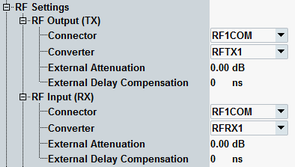

This section configures the RF input path and the RF output path.
Depending on your hardware configuration, there are dependencies between some parameters. Configure the settings in the following order to access all possible values:
Select the signaling unit. See "Base Band Unit".
In a multi-CMW setup, this action selects also the instrument.
Select the RF connector.
Select the RF converter.

The following parameters configure the RF output path of the R&S CMW.
Selects the output path for the generated RF signals, that means the output connector and the TX module.
Remote command:Defines the value of an external attenuation (or gain, if the value is negative) in the output path. With an external attenuation of x dB, the power of the generated signal is increased by x dB. The actual generated levels are equal to the displayed values plus the external attenuation.
If a correction table for frequency-dependent attenuation is active for the chosen connector, the table name and a button are displayed. Press the button to display the table entries.
Remote command:Defines the value of an external time delay in the output path. A delay can, for example, be caused by a long optical fiber cable or by an additional instrument in the output path.
As a result, the downlink signal is sent earlier, so that the downlink signal arrives at the UE without delay.
Remote command:The following parameters configure the RF input path of the R&S CMW.
Selects the input path for the measured RF signal, i.e. the input connector and the RX module to be used.
Defines the value of an external attenuation (or gain, if the value is negative) in the input path. The power readings of the R&S CMW are corrected by the external attenuation value.
The external attenuation value is also used in the calculation of the maximum input power that the R&S CMW can measure.
If a correction table for frequency-dependent attenuation is active for the chosen connector, then the table name and a button are displayed. Press the button to display the table entries.
Defines the value of an external time delay in the input path, for example caused by a long optical fiber cable.
The signaling application uses this information to compensate for the delay and to synchronize the uplink and the downlink despite the delay.
Remote command: